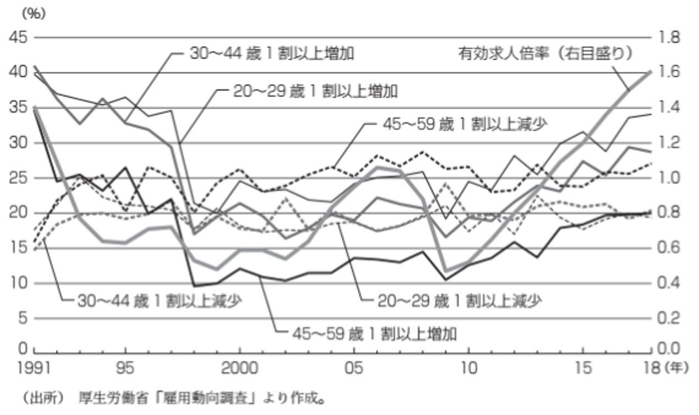

マクロ経済学から見る労働経済学
本資料は、大森義明・永瀬伸子（2021）『労働経済学をつかむ』（有斐閣） を参考に作成しています。 授業目的に合わせて一部構成や表現を調整しています。
これまでの章では、労働者や企業がどのように合理的な意思決定を行うかというミクロ経済学的な視点から労働経済を見てきました。
この章では、そのような意思決定の積み重ねが労働市場全体にどのような影響を及ぼすのかを、マクロ経済学的な観点から分析していきます。
転職・就職
転職の決定と職探し
ジョブ・サーチの理論
ジョブ・サーチとは、職探しのことです。まずは、大学生の就職活動の例を通して、職探しのプロセスでは、何に基づいてどのような意思決定が行われているかを見ていきましょう。
このとき、今年第2志望の会社に就職するべきか、1年留年して、来年第1希望の会社に就職できるように就職活動をやり直すべきか、考えてみます。
追加的な1年間の就職活動の純便益
就職活動の費用
- 留年 \(\rightarrow\) 1年分の学費100万円※ただし授業は取らないので得られるものはない
- 就職活動の直接費用10万円（交通費や携帯代など）
- 第2志望の会社に就職していれば得られたであろう生涯賃金3億円（機会費用）
\(\rightarrow\) 計3億110万円
就職活動の便益
- （第1志望の会社に就職すれば）生涯賃金3億9000万円
- 上述した生涯賃金4億円は、今年就職し定年まで43年勤めたときの総所得
- 留年すれば勤続年数は42年、この会社の65歳時の平均年収1000万円を取りそこなう
- （就職活動がうまくいかなければ）生涯賃金8000万円（塾講師のアルバイトを想定）
\(\rightarrow\) 純便益は内定確率によって異なる
就職成功 \(\rightarrow\) 8890万円（3億9000万円 \(-\) 3億110万円）
就職失敗 \(\rightarrow\) -2億2110万円（8000万円 \(-\) 3億110万円）
では、どのくらいの内定確率があれば就職活動を続けるべきでしょうか？求める確率を \(P_{1}\) とすると、
\[ P_{1} \times 8890万円 - (1 - P_{1}) \times 2億2110万円 = 0 \]
が成り立つ必要があります。つまり、
\[ \begin{align} (8890万円 + 2億2110万円) \times P_{1} - 2億2110万円 =& 0 \\ 3億1000万円 \times P_{1} =& 2億2110万円 \\ P_{1} \approx& 0.713 \\ \end{align} \]
内定確率が71.3%を上回っている必要があります。
ただし、この考え方はリスクを伴う第1志望の内定から得られる純便益の期待値と、確実に得られる第2志望の内定から得られる純便益の期待値を中立的に捉えられる（リスク中立的な態度を持つ）人に当てはまる考え方です。中には、71.3%の内定確率があってもリスクをとって留年をすることに不安を覚える（リスク回避的な態度を持つ）人もいるかもしれません。リスク回避的な人が留年を受け入れるには、リスクを伴う第1志望の内定から得られる純便益の期待値が、確実に得られる第2志望の内定から得られる純便益の期待値を十分に上回る必要があります。
確認クイズ：
大学に入学したばかりのあなたは、紹介された塾のアルバイト（月収10万円）に今月から入るか、それを辞退して、来月応募予定の有名テーマパークのアルバイト（月収20万円）に挑戦するか迷っています。アルバイト探しにかかる直接費用は無視できるものとします。雇用期間は、塾が3ヶ月、テーマパークが2ヶ月です。塾の内定を辞退した場合、今月の収入はありません。テーマパークのアルバイトに受からなければ、近所のカフェ（月収5万円）で働く予定です。次の問いに答えなさい。
テーマパークに内定したときの純便益はいくらか？
万円
アルバイト探しに失敗したときの純便益はいくらか？
万円
アルバイト探し続けることが合理的となるために必要な内定確率はいくらか？
ここからは、タロウが直面する環境が変わったときに、就職活動を続けることが合理的になる内定確率がどのように変化するかを分析しましょう。
Case 1：家業を継ぐことができるとき
就職活動がうまくいかなかったとき、タロウは家業を継ぐという第3の選択肢を取ることができるとします。家業を継いだ場合の生涯賃金は2億円程度だと分かっています。このことは、就職活動を続けて失敗したときの便益を変化させます。
このとき、就職活動を続けることの純便益は以下のようになります。
就職成功 \(\rightarrow\) 8890万円（3億9000万円 \(-\) 3億110万円）
就職失敗 \(\rightarrow\) -1億110万円（2億円 \(-\) 3億110万円）
よって、就職活動を続けることが合理的になる内定確率は、以下の式を満たします。
\[ \begin{align} P_{2} \times 8890万円 - (1 - P_{2}) \times 1億110万円 & 0 \\ (8890万円 + 1億110万円) \times P_{2} - 1億110万円 =& 0 \\ 1億9000万円 \times P_{2} =& 1億110万円 \\ P_{2} \approx& 0.532 \\ \end{align} \]
内定確率が53.2%を上回っている必要があります。
家業を継ぐという選択肢がなかったときの必要内定率71.3%よりも、かなり低い内定確率で就職活動を続けることが合理的になります。
ここで家業は、就職活動に失敗した際のセーフティネット（保護網）の役割を果たしています。家業がなければ、最悪の場合生涯賃金が0円になることすらあり得ますが、そうならずに済むのはタロウに家業を継ぐという選択肢があるからです。
セーフティネットは、タロウにとっての助けとなると同時に、就職活動期間を伸ばすという副作用もあります。
もし、家業を継ぐという選択肢がなければ、最悪の場合に生涯賃金は0円になります。このとき、就職活動を続けることが合理的になる内定確率は、
\[ \begin{align} P_{3} \times 8890万円 - (1 - P_{3}) \times 3億110万円 & 0 \\ (8890万円 + 3億110万円) \times P_{3} - 3億110万円 =& 0 \\ 3億9000万円 \times P_{3} =& 3億110万円 \\ P_{3} \approx& 0.772 \\ \end{align} \]
内定確率が77.2%を上回っている必要があります。相当な自信がないと就職活動を続けることは合理的とは言えません。
家業を継ぐという選択肢がなければ、就職活動を辞め、第2志望の会社に就職するインセンティブが高まるのです。
多くの労働者にとっては、雇用保険の失業手当がセーフティネットの役割を果たします。
確認クイズ：
就職活動を続けるか、第2志望の会社に就職するか迷っているハナコを考えます。
- 第2志望に就職した場合の生涯賃金：3億円
- 就職活動を続けて第1志望に内定した場合の生涯賃金：4億円
- 就職活動に失敗した場合、家業を継ぐため生涯賃金は 2億円
就職活動を続けることが合理的になるために必要な内定確率 (P) を求めなさい。
また、家業を継ぐという選択肢がなかったときに、必要な内定確率はどう変化するか？
家業が継げるときより なる。
Case 2：第2志望の会社の生涯賃金が高いとき
現在のオファー（生涯賃金）の高さは、就職活動を短くします。もし、タロウが内定をもらった第2志望の会社の生涯賃金が、3億円ではなく3億5000万円であったらどうでしょうか。この変化は、就職活動を続けるときの機会費用を変化させます。
就職活動を続けることの純便益は以下のようになります。
就職成功 \(\rightarrow\) 3890万円（3億9000万円 \(-\) 3億5110万円）
就職失敗 \(\rightarrow\) -1億5110万円（2億円 \(-\) 3億5110万円）
よって、就職活動を続けることが合理的になる内定確率は、以下の式を満たします。
\[ \begin{align} P_{4} \times 3890万円 - (1 - P_{4}) \times 1億5110万円 & 0 \\ (3890万円 + 1億5110万円) \times P_{4} - 1億5110万円 =& 0 \\ 1億9000万円 \times P_{4} =& 1億5110万円 \\ P_{4} \approx& 0.795 \\ \end{align} \]
内定確率が79.5%を上回っていないと、就職活動を続けることは非合理的になってしまいます。この確率は、Case 1での確率53.2%よりもかなり高い確率です。
現在のオファーである第2志望の会社の生涯賃金が高くなると、就職活動を辞め、第2志望の会社に就職するインセンティブが高まるのです。
働いている労働者が職探しを始める場合には、現在の仕事の所得が現在のオファーとなります。現在の仕事の所得が低ければ、職探しをするインセンティブが高まり、離職しやすくなります。よって、所得の高い仕事をしている労働者は勤続年数が長くなり、所得が低いと勤続年数は短くなる傾向があります。
確認クイズ：
就職活動を続けるか、第2志望の会社に就職するか迷っているタロウを考えます。
- 就職活動を続けて内定した場合の生涯賃金：4億円
- 就職活動に失敗した場合、家業を継ぐため生涯賃金は 2億円
- 第2志望の会社に就職した場合の生涯賃金：\(X\) 億円
就職活動を続けることが合理的になるために必要な内定確率が
ちょうど 50％（\(P = 0.5\)） になるような 第2志望の会社の生涯賃金 \(X\) を求めなさい。
Case 3：第1志望の会社の生涯賃金が高いとき
Case 2とは逆に、第1志望の会社から期待できるオファー（生涯賃金）が高いことは、就職活動期間を延ばします。第1志望の会社の生涯賃金が3億9000万円ではなく4億5000万円であったらどうでしょうか。この変化は、就職活動を続けるときの便益を変化させます。
就職活動を続けることの純便益は以下のようになります。
就職成功 \(\rightarrow\) 1億4890万円（4億5000万円 \(-\) 3億110万円）
就職失敗 \(\rightarrow\) -1億110万円（2億円 \(-\) 3億110万円）
よって、就職活動を続けることが合理的になる内定確率は、以下の式を満たします。
\[ \begin{align} P_{5} \times 1億4890万円 - (1 - P_{5}) \times 1億110万円 & 0 \\ (1億4890万円 + 1億110万円) \times P_{5} - 1億110万円 =& 0 \\ 2億5000万円 \times P_{5} =& 1億110万円 \\ P_{5} \approx& 0.404 \\ \end{align} \]
内定確率が40.4%を上回っていれば、就職活動を続けることは合理的になります。この確率は、生涯賃金が3億9000万であるときの確率53.2%よりも低く、期待オファーが高まると、第2志望の内定を辞退し、就職活動を続けるインセンティブが高まることが分かります。
確認クイズ：
モモコは、内定確率が40％を上回るなら就職活動を続けたいと考えています。
条件は次の通りです。
- 第2志望の会社に就職した場合の生涯賃金：3億円
- 就職活動に失敗した場合、家業を継ぐため生涯賃金は 2億円
- 第1志望の会社に内定した場合の生涯賃金：\(Y\) 億円
このとき、就職活動を続けることが合理的になるためには、第1志望の会社の生涯賃金 \(Y\) はいくら以上である必要がありますか。
以上のCase 1 ～ Case 3 より1、ジョブ・サーチの理論から得られる示唆をまとめると次のようになります。
確認クイズ：
次の文章を読み、空欄に入る最も適切な語句を選びなさい。
タロウが第1志望の企業への内定を目指して就職活動を続けるかどうかは、内定確率やその他の条件に左右される。たとえば、失敗したときに「家業を継ぐ」という選択肢があると、最悪でも一定の生涯賃金が得られる。このような選択肢は の役割を果たし、必要な内定確率を引き下げることになる。一方、第2志望の会社の生涯賃金が高まると、就職活動を続けることで失われる が大きくなり、活動を続けるにはより高い内定確率が必要になる。また、第1志望の会社の生涯賃金が高まると、得られる利益が大きくなるため、より 内定確率でも活動を続けることが合理的になる。
ここまでは新卒としての就職活動を分析してきましたが、いったん就職をしたとしても、中途採用で転職するケースはよくあります。現職で働きながら行う就職活動のことをオン・ザ・ジョブ・サーチと呼びます。
転職によって必ずしも賃金が上昇しないケースには、例えば
- 現職の企業の業績悪化が予想され、今後賃金が下がると思われるため、賃金が下がる前に転職する。
- 現時点では、現職の賃金の方が高いが今後の上昇率は低いと思われる。一方で、転職先の賃金は低いが長期にわたって務めることで大幅な上昇が見込まれる。
といったものが該当します。
ジョブ・マッチングの理論
これまでの議論では、ある人にとって「良い」仕事は、他の人にとっても「良い」仕事であると暗黙のうちに仮定していました。
しかし、現実にはいろいろなタイプの仕事が存在していて、仕事のどこに魅力を感じ、何を「良い」仕事であると感じるかは人それぞれです。
例えば、チャレンジの多い仕事に魅力を感じる人とそうでない人、実力重視の環境で働きたい人とそうでない人。 あるいは、ものづくりが得意な人とそうでない人、人とコミュニケーションをとることが得意な人とそうでない人。
このような仕事と労働者のマッチ（組み合わせ）の質が多様である状況におけるジョブ・サーチを考えるのがジョブ・マッチング理論です。
労働者は、自身の特性が生かせるマッチの質が高い仕事に就くことができれば、高い生産性を発揮でき、高い賃金を得られる一方、ミスマッチな仕事に就くと、生産性が低く評価され、賃金も伸びにくく、離職や転職を選択する可能性が高まります。
なお、ここでの「ミスマッチ」は、多くのメディアで見聞きするような仕事と労働者のミスマッチとは異なります。
- 一般的なミスマッチ：介護業界の労働需要が超過する一方で、他の産業では労働供給が超過する状況など、各労働市場における労働需要と労働供給のギャップ
- ジョブ・マッチング理論のミスマッチ：個々の労働者と個々の仕事の組み合わせの質の低さ（労働の需給が均衡していても起こり得る）
ジョブ・マッチング理論におけるミスマッチの証拠を見つけることはとても困難です。
一方で、大森義明・永瀬伸子（2021）『労働経済学をつかむ』（有斐閣）は、学歴・専攻分野のミスマッチのない労働者に限ったとしても、日本におけるミスマッチ割合は国際的に高いことを指摘しています。
長期雇用を前提とした日本の雇用慣行が、多様な個人と多様な仕事を円滑にマッチングさせるうえで制約になっているのかもしれません。
確認クイズ：
次の文章を読み、空欄に入る最も適切な語句を選びなさい。
現職で働きながら行う就職活動のことを と呼ぶ。一般に、転職をしない場合と比較して、転職する場合の が大きいと見込まれるときに転職が行われる。 また、ジョブ・マッチング理論では、仕事と労働者のマッチの質は就職前には分からず、働きながら を観察することで徐々に明らかになるとされる。この理論の帰結として、マッチの質が未確定な （勤続年数が短い）労働者ほど、より良いマッチを求めて転職しやすい傾向がある。
労働市場の流動性
ここでは、アメリカと日本の労働市場を比較しながら、日本の転職の状況を分析していきましょう。
前提として、アメリカの労働市場は日本よりもかなり流動的です。
日本の転職では、転職前後の賃金は有効求人倍率と相関します。

- 求人が多い（有効求人倍率が高い） \(\rightarrow\) 賃金水準が上昇 \(\rightarrow\) 賃金が
- 上がる転職が増える
- 求人が少ない（有効求人倍率が低い時期） \(\rightarrow\) 経営不振などのやむを得ない転職 \(\rightarrow\) 賃金が下がる転職が増える
確認クイズ：
次の文の空欄に当てはまる最も適切な言葉を答えなさい。
では、転職による賃金上昇の役割は比較的限定的である一方で、 では、転職（雇用主間移動）が賃金上昇の重要な要因になりやすい。
このような違いは、アメリカの労働市場の が日本よりも高いことと関係している。
労働市場の流動化と解雇規制
長期デフレ等による就職難、経済的困窮等からの再チャレンジを掲げ、2006年、経済財政諮問会議において「労働ビッグバン」という呼称の労働市場改革が提唱されました。
- 生産性の低い経済分野から高い分野へ労働者が円滑に移動できる仕組み
- 勤務時間を多様化し、育児や介護を抱える労働者が働きやすくなる仕組み
- 年功序列ではなく職種によって処遇が決まる仕組み
このような労働市場の流動化を達成する仕組みの構築を目指しました。11
転職は、労働資源の再分配という重要な役割を果たします。
- 国際競争、技術革新、人口動態の変化などによって各産業・職種における労働需要は変化し、より需要が高い領域では、それだけ労働者の価値が高くなる
- より高い業績をあげている企業への転職
- 輸入産業から 輸出産業への転職
- 技術革新によって生まれた新たな産業・職種への転職
- より景気の良い地域への転職
- このような転職の結果として、限られた労働資源が社会にとってより望ましい形に再配分される
- 解雇規制は転職率に大きな影響を及ぼし、労働資源の再配分にも影響する
- 解雇規制が厳しい：解雇は起こりづらく、それに伴う転職も減る
- 解雇規制が緩い：解雇が容易で、それに伴う転職も増えるため、労働資源の再配分がより迅速に行われる
確認クイズ：
以下は、労働市場に関する政策や制度の特徴です。
それぞれについて、最も直接的に生じやすい結果として正しいものを
A〜Dから1つずつ選びなさい。
政策・制度
- 解雇規制が厳しい
- 労働市場の流動性が高い
- 有効求人倍率が高い局面
- 同一企業内での長期雇用が中心
結果
A. 転職を通じた賃金上昇が起こりやすい
B. 労働資源の再分配が進みにくい
C. 賃金が下がる転職が増えやすい
D. 勤続を通じた賃金上昇が中心になる
賃金格差
私たちは普段、アルバイトや就職活動を通じて「時給」や「初任給」の違いを目にします。しかし、日本全体で見たとき、その格差はどの程度存在し、どのような要因で生まれているのでしょうか。
まずは現在観察されている事実を確認することから始めましょう。
賃金格差を生じさせる要因
このように、賃金格差はさまざまな角度から観察することができます。このような格差を生じさせる要因とは何でしょうか？
賃金格差はさまざまなグループ間で観察されます。
学歴間、経験年数・勤続年数間、職種間、企業規模間、産業間、雇用形態間、男女間などです。
しかし、例えば職種間で賃金格差が観察されたとしても、「職種」自体が格差の要因ではありません。「職種」そのものが賃金に因果的影響を与えているわけではないからです。職種間の賃金格差が生じるのは、職種に対する需要と供給のバランス、職種が要求する人的資本、職種の職場環境などの賃金格差要因が、職種間で異なるのが主な理由だと考えられています。
確認クイズ：
次のA〜Eは、日本で観察される賃金格差に関する記述です。
このうち、賃金格差の「要因」ではなく、単なる「観察された違い」に該当するものを
すべて選びなさい。
A 管理的職業の平均賃金は、サービス職より高い
B 教育・学歴の違いは、賃金に因果的な影響を与える可能性がある
C 男女間で平均賃金に差があり、女性は男性の約7割の水準である
D 職種によって、必要とされる技能や人的資本が異なる
E 意欲や能力の違いが賃金に影響している可能性がある
賃金格差をもたらす測定可能な要因に関する経済理論
ここでは、まず賃金格差の測定可能な要因を見ていきます。
- 需要・供給要因
- 労働市場のモデルより、労働需要が増えると賃金は高くなる、あるいは労働供給が増えると賃金は低くなる
- ある仕事の需要が増えると、その仕事の賃金は高くなる
- ある世代の労働者の数が多いと、その世代の労働者の賃金は他の世代の労働者の賃金と比較して低くなる
- 産業間、職種間、世代間などの格差として現れる
- 賃金格差があることによって、他の産業から需要が高い産業へ労働者が移動する（そして、それは賃金格差が消滅するまで続く）ため、賃金格差は労働サービスという希少資源を効率的に配分する機能があると言える
- 労働市場のモデルより、労働需要が増えると賃金は高くなる、あるいは労働供給が増えると賃金は低くなる
- 教育・学歴
- 教育や学歴は、生産性の高い仕事に就く可能性を高める
- 企業は、より高い成果が期待できる（より多くの人的資本を蓄積した）労働者に対して高い賃金を支払う傾向がある
- 学歴・教育年数間の格差として現れる
- 訓練
- 企業内訓練や職業訓練を通じて技能を身につけた労働者は、生産性が高まる
- 訓練機会の多い職種や働き方ほど、賃金が高くなりやすい
- 雇用形態間、経験年数・勤続年数間の格差として現れる
- ジョブ・サーチ
- 転職や就職の際に、より良い条件の仕事を探すには時間や情報が必要となる
- ジョブ・サーチにはコスト（収入の不安定さ、時間や労力）がかかる
- 早く収入を得る必要がある、転職回数が評価を下げやすい、情報が限られている、といった労働者は、条件の良くない仕事でも受け入れる必要がある
- 収入がなくても生活に余裕がある、転職が不利になりにくい立場にある、情報収集や交渉が得意、といった労働者は、時間をかけてでも良い条件の仕事を探すことができる
- 能力（生産性）とは無関係な格差として現れる
- 後払い賃金制度
- 従業員の長期定着や努力を引き出すため、若年期は生産性よりも低く、中高年期は生産性よりも高く賃金を支払う
- 勤続年数、年齢間の賃金格差として現れる
- 補償賃金
- 人に好まれにくい仕事で働く人を集めるために、他の仕事よりも高い賃金を支払うことによる賃金格差（補償賃金格差）
- 3K（きつい、危険、汚い）、責任が重い、不安定な雇用など
- 職種間の賃金格差として現れる
- 人に好まれにくい仕事で働く人を集めるために、他の仕事よりも高い賃金を支払うことによる賃金格差（補償賃金格差）
賃金格差に関する測定不可能な要因
賃金は、資源配分（労働サービスの配分）が効率的に行われるための重要な指標であることが分かりました。一方で、学歴や経験など測定できる要因によらない賃金格差も存在します。
- 偏見・嗜好による差別
- 雇用主・労働者・顧客の偏見・嗜好によって生じる
- 古くは Becker (1957)12 の偏見・嗜好による人種差別がもたらす賃金格差の理論
- 賃金決定の際に、生産性に貢献する観測可能な要因が同一である労働者を、性別、年齢、出身地、人種、信仰、外見、性的嗜好などにより異なる扱いをすることは非合理的
- 雇用主の差別：（例）女性よりも男性を好む
- 女性の賃金が男性よりも十分低くないと女性を雇わない
- 雇用主は女性を雇う際に心理的費用を払っていると考えられる
- 労働者の差別：（例）自分とは別の特定グループの労働者とともに働くことを嫌う
- 雇用主はどちらかのグループの労働者のみを雇うことが最適
- グループ別の職場が生じるが、グループ間の賃金格差は生じない
- 顧客の差別：（例）女性労働者が担当者であることを嫌う
- 雇用主は女性の賃金が男性よりも十分低くないと女性を雇わない
- 雇用主・労働者・顧客の偏見・嗜好によって生じる
- 統計的差別
- 労働者の個々の属性に関して企業と労働者の間で情報の非対称性があり、個々の労働者の属性を判断する費用が高いときに、企業が労働者の属するグループの平均的属性に従って個々の労働者を扱うこと
- （例）企業は長期勤続をしてくれる労働者を雇いたいが、長期勤続の意思が強い労働者とそうでない労働者を見極めるのが難しい
- 男性全体よりも女性全体の平均離職率が高い
- （例）企業は個々の労働者の能力を見極めることが困難
- 偏差値が高い大学を卒業した労働者の方が偏差値が低い大学を卒業した労働者よりも能力が高いと予測
- 個々の労働者の属性を判断するコストが低いときには企業にとっても非合理的
- アンコンシャス・バイアス
- 無意識に差別的な行動をしていること
- 心理学の成果を取り入れ
- 時間をかければ公正な判断ができるが、時間の制約があるなかで仕事に追われ、短時間で判断を下す場合には、意識的に判断する場合の脳領域と異なる領域で、無意識に判断してしまう
- 当人の持っている暗黙の価値規範に影響を受け、暗黙の差別が生じる
- （例）育児休業から復帰した女性に対して、当人への相談なしに、上司が無意識に本人の職位と乖離した簡単な仕事を与える
- 母親は育児に専念するべきだというアンコンシャス・バイアス
確認クイズ
次の１〜６は、賃金格差が生じている具体的な状況です。
それぞれについて、最も適切な理論を1つだけ下の選択肢から選びなさい。
ある産業で人手不足が深刻化し、他産業より賃金が高くなった結果、労働者がその産業へ移動している。
大学進学により高度な知識を身につけた人ほど、高い賃金の仕事に就いている。
企業内で長く働くほど賃金が上昇し、若年期は生産性より低い賃金が支払われている。
収入の余裕や情報が乏しい人ほど、条件の悪い仕事でも早く受け入れている。
危険で敬遠されやすい仕事ほど、他の仕事より賃金が高く設定されている。
能力や経験が同じでも、性別や出身といった属性によって賃金や採用が不利になる。
選択肢
A 補償賃金
B 差別（偏見・統計的差別・アンコンシャス・バイアス）
C 需要・供給要因
D ジョブ・サーチ
E 後払い賃金制度
F 教育・学歴
差別による賃金格差を縮小するための法律
このように、差別はさまざまな背景によって生じますが、労働者の生活を守るために、差別を解消するための政策的な取り組みが行われています。
- 男女雇用機会均等法
- 1985年に成立した、それまでの男女別採用を禁止した法律
- 妻子を養う男性を想定した（昇進可能性が高くコミットメントの高い）働き方 \(\rightarrow\) 総合職
- もともと未婚女性を想定した働き方 \(\rightarrow\) 一般職
- 多くの男性は総合職、女性は一般職に就くという状況は2000年代になってもなかなか変わらなかった
- 2000年代以降、特に女性の非正社員雇用（不安定、低賃金）が拡大
- 同一労働同一賃金
- 同じ労働をしているのであれば同じ賃金を支払うべきだという基本的な原則
- 2018年「働き方改革法案」によって登場
- 「同一労働」の定義について、厚生労働省は司法に判断をゆだねた
- ポジティブ・アクション（アファーマティブ・アクション）
- 平等な機会に恵まれなかった小数集団に対してこれを是正するような積極的な取り組みを行うこと
- 厚生労働省「固定的な男女の役割分担意識や過去の経緯から、管理職に女性はほとんどいない、課長以上の管理職は男性が大半を占めている等の差が男女労働者に生じている場合、このような差を解消しようと、個々の企業が行う自主的かつ積極的な取り組み」
- 特定の集団に対して、一定の雇用の割当を課している国もある
確認クイズ：
次の文章を読み、空欄に最も適切な語句を入れなさい。
他の条件を一定として、若い女性労働者の提供サービスと比べ高齢の男性労働者の提供するサービスを顧客が嫌う場合は、 が、財やサービスを購入する際に、価格のみならず、高齢の男性労働者によて提供されたサービスを消費する を支払っていると考えると理解しやすい。高齢の男性の賃金が若い女性と比べ十分 なければ、雇用主は を雇わない。従って、雇用主が であっても、顧客が であるならば、若い女性よりも 賃金で高齢の男性を雇えることになる。
人は自身が差別をしていることを認識しないまま差別的な行動をとり、これが採用差別や、昇進差別を引き起こす可能性がある。こうした差別は、意識的な差別でないだけに と呼ばれる。
語句
低い、低く、高い、高く、機会費用、心理的費用、差別的、非差別的、高齢の男性、若い女性、顧客、雇用主、アンコンシャス・バイアス
グループ間の賃金格差
これまで、賃金格差を生む要因（測定可能なもの・不可能なもの）を学んできました。ここでは、まず、多くの国で見られるさまざまなグループ間の賃金格差を見た後、日本の特徴を学んでいきます。
さまざまなグループ間の賃金格差
まず、多くの国で見られるさまざまなグループ間の賃金格差を見ていきます。
- 学歴間賃金格差
- どの国においても、学歴が高いほど平均賃金が高い傾向がみられる
- 考えられる要因（※賃金を決定する「要因」としての教育・学歴ではないことに注意）
- 人的資本に対する投資の因果的影響
- 学歴の（シグナルとしての）因果的影響
- 訓練、ジョブ・サーチの差
- 後払い賃金制度下で働く傾向の差
- 需要と供給のバランスの差
- 例：高学歴の労働者ほど、多く訓練を受け、全国規模の労働市場でジョブ・サーチを行い、後払い賃金制度を採用する企業への就職が多い
- 経験年数・勤続年数間賃金格差
- 考えられる要因
- 教育、学歴、訓練、ジョブ・サーチなどの差
- 例：経験年数とともに一般的人的資本が蓄積される、勤続年数とともに企業特殊的人的資本が蓄積される、賃金が高い仕事に就いている労働者ほど経験年数・勤続年数が長くなる
- 考えられる要因
- 職種間賃金格差
- 考えられる要因
- 職種間の人的資本格差
- 補償賃金格差
- 例：高い訓練が要求され、仕事に就くために試験の合格が必要などの制約がある仕事の方が平均賃金が高い
- 格差はあくまで平均的な話であり、もちろん、同じ職種でも高い賃金を得ている労働者もいれば、低賃金の労働者もいる
- 例：人気のYouTuberと、ほとんど視聴者がいないYouTuber
- 補償賃金格差の予測では3Kの仕事は賃金が高くなるはずであるが、現実には賃金が低い仕事が多い
- 他の条件が一定でない可能性を示唆
- 例：3Kの仕事だが、他の仕事よりも高度な人的資本を必要としない
- 考えられる要因
- 企業規模間賃金格差
- 日本では、比較的企業規模間賃金格差が大きい
- 考えられる要因
- 大企業、中小企業間での人的資本格差や、後払い賃金制度採用の格差
- 大企業では中小企業よりも多様な仕事の機会があり、ジョブ・マッチングが容易である可能性
- 大企業の方が、正社員を新卒採用し、企業特殊訓練を与える傾向
- 大企業は、中小企業と比較して、財・サービス市場での価格支配力が強く、高い利潤を得られている可能性
- 大企業への就職が競争的であることによる、個人間の能力差
- 産業間賃金格差
- 考えられる要因
- 産業間での財・サービスに対する需給格差
- 人的資本格差や後払い賃金制度採用の格差
- 資本装備率（労働者1人当たりの資本設備の量）の差
- 例：大きな機械がある製造業と、簡単な設備の製造業では、1人当たりの生産性の差がある可能性
- 考えられる要因
- 雇用形態間賃金格差
- 多くの先進国で、有期雇用や短時間雇用など、不安定な雇用や多様な働き方が広がっている
- 考えられる要因
- 雇用形態間での就職における競争の差
- 期待される雇用期間の差
- 採用後の企業内訓練の差
- 仕事内容や責任の差
- いったん有期雇用になると、雇用期間の定めのない雇用に移りにくいと言われている
- 男女間賃金格差
- 考えられる要因
- 人的資本格差
- 後払い賃金制度採用の格差
- 補償賃金格差
- 女性差別
- 同じ学歴、同じ経験、同じ勤続年数にも関わらず、賃金が異なる場合は女性差別が疑われる
- 出産・育児による制約を受けやすいような働き方のルールや雇用慣行があることにより、このような格差が生じている
- 考えられる要因
日本の賃金格差の特徴
以上のようにさまざまな賃金格差が観察できますが、ここでは、日本で特に顕著にみられる4つの賃金格差についてみていきます。
- 男女間賃金格差
- 昔よりも縮小傾向ではあるものの、欧米と比較するとそのスピードが遅く、依然として大きい格差がある
- 図：学歴と賃金の関係：日本における大卒女性の賃金は、大卒男性だけでなく、高卒男性よりも低い
- 企業規模間の賃金格差
- 戦後の労働研究などで、大企業と比較して中小企業の賃金が低いという指摘
- 平均給与の差は、好景気に縮小、景気後退期に拡大する傾向があったが、最近は時系列的な一定の傾向は見られない
- 大企業でフルタイム非正社員が増加している影響か
- 男性一般労働者の平均給与額は
- 10～99人企業：32.3万円（正社員30.3万円、非正社員22.6万円）
- 1000人超企業：38.0万円（正社員40.0万円、非正社員24.1万円）
- 平均給与の差は、好景気に縮小、景気後退期に拡大する傾向があったが、最近は時系列的な一定の傾向は見られない
- 中小企業で働く労働者の割合は多い（2019年で、99人以下企業：2424万人、100～499人企業：1108万人、500人以上企業：1809万人）
- 企業規模間の賃金格差には、労働者構成の差（学歴構成、勤続年数、年齢構成の差など）が含まれる
- 正社員と非正社員間の賃金格差
- 今日、大きな社会問題となりつつある賃金格差
- 1990年代：非正社員は圧倒的に女性に多い
- 主婦自らが望んで短時間の仕事をしており、その代償としての低賃金なのであれば、個人の選択の問題であるという風潮
- 1997, 98年の金融危機以降：若者の望まない非正社員化
- 1999年, 2003年：労働者派遣法の改正による
- 1999年：派遣の原則自由化（一部派遣を禁止した業務リストを策定）
- 2003年製造業への派遣の解禁
- 1990年代：非正社員は圧倒的に女性に多い
1. 年齢間賃金格差
失業と不安定雇用
失業のストックとフロー
失業率とは
労働力のフロー分析
マクロ経済と失業率の関係
不本意な非正規雇用
非正規雇用の拡大
安定雇用への入口？
不安定な非正規労働
非正社員の安定性を確保するための政策
Footnotes
自身の内定確率を見積もるときには、就職活動を1年間延長することによる人的資本の摩耗や、汚名効果を考慮する必要があります。1年間留年をして就職活動をしても、その間に授業を受けるわけではないので、新しいスキルが身につかないことはもちろん、現在身につけている知識やスキルを失うことすらもあり得ます。このことを人的資本の摩耗と言います。また、留年したことは就職活動先の会社に知られてしまうので、能力が低くて卒業できなかったか、内定がもらえなかったかのいずれかではないかと思われるでしょう。就職活動期間の長期化に伴う人的資本の摩耗や汚名効果によって、1年後の内定率は下がるかもしれません。↩︎
『労働経済白書』2014年。「就業構造基本調査」より算出↩︎
Bureau of Labor Statistics, Employee Tenure Summary, 2024↩︎
Bureau of Labor Statistics, Employee Tenure Summary, 2024↩︎
（例）Goldin, Claudia. “A grand gender convergence: Its last chapter.” American economic review 104.4 (2014): 1091-1119.↩︎
US Census Bureau Job-to-Job Flows；Fallick and Fleischman 2004↩︎
Topel, Robert H., and Michael P. Ward. “Job mobility and the careers of young men.” The Quarterly Journal of Economics 107, no. 2 (1992): 439-479.↩︎
厚生労働省「雇用動向」1991～2018年↩︎
Topel, Robert H., and Michael P. Ward. “Job mobility and the careers of young men.” The Quarterly Journal of Economics 107, no. 2 (1992): 439-479.↩︎
Bureau of Labor Statistics, Employee Tenure Summary, 2024↩︎
しかし、「解雇の金銭補償ルール」のような正規労働者の流動性を高める政策は、いまだに議論が続いています。↩︎
Becker, Gary Stanley. The economics of discrimination: an economic view of racial discrimination. University of Chicago, 1957.↩︎